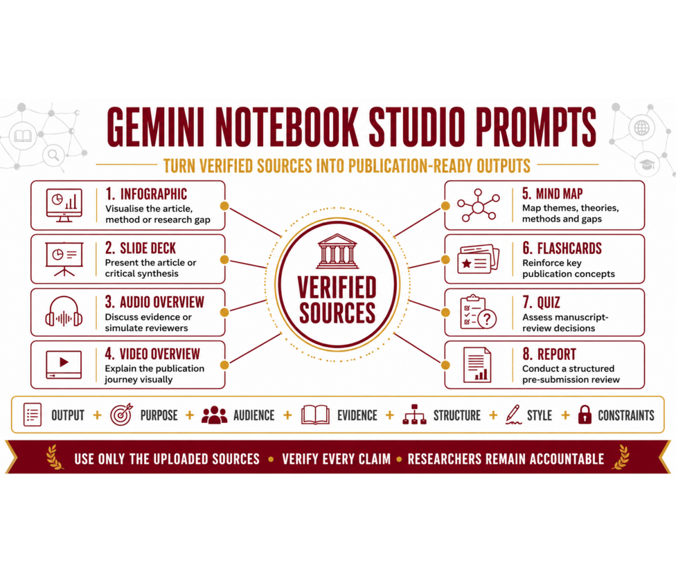

GEMINI NOTEBOOK STUDIO PROMPT LIBRARY
Gemini Notebook Studio Prompts
Turn uploaded, verified sources into publication-ready visual, audio and review outputs with 24 practical prompts across eight Studio formats.
SOURCE-GROUNDED OUTPUT CREATION
Transform evidence into purposeful research outputs.
Studio prompts differ from analytical Chat prompts. They specify the purpose, audience, evidence focus, structure, delivery style and constraints for a complete output generated from uploaded sources.
Explore all 24 Studio prompts
DESIGN THE OUTPUT BEFORE GENERATING IT
Studio Prompt Formula
Use a complete production brief: Output Type + Purpose + Audience + Evidence Focus + Structure + Style + Constraints.
REUSABLE TEMPLATE
Build a source-grounded Studio prompt
Create a [STUDIO OUTPUT] for [AUDIENCE] to achieve [PURPOSE]. Focus on [TOPIC OR EVIDENCE]. Organise the output into: [REQUIRED STRUCTURE]. Use [STYLE, TONE OR VISUAL APPROACH]. Use only the uploaded sources. Preserve uncertainty, cite supporting evidence and do not invent facts, references, quotations or numerical values.
Verified sources first: Use only uploaded sources, verify every important claim and retain researcher accountability. Studio availability and customisation options may vary by account or plan.
No prompts found
Try another keyword or clear the output filter.